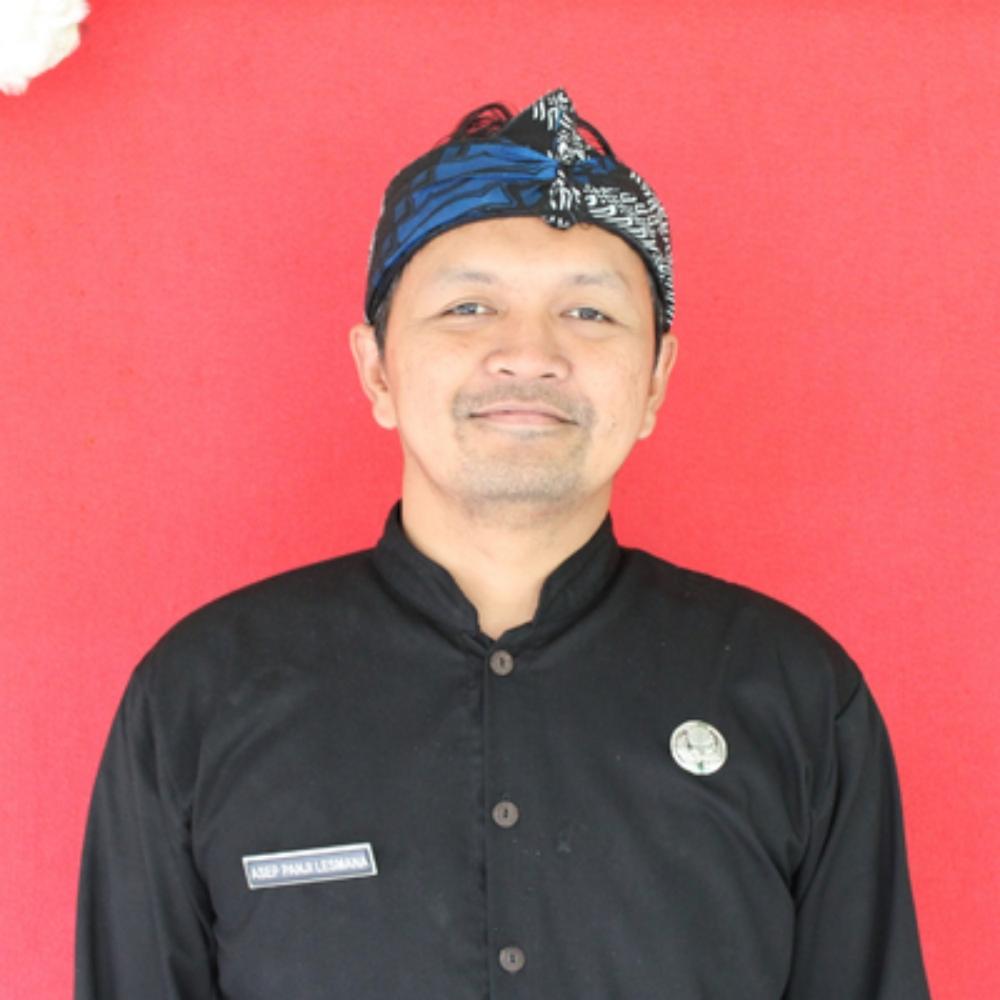

Kepala Sekolah SMAN 10 Depok
"Selamat datang di portal resmi SMA Negeri 10 Depok. Kami berkomitmen mencetak generasi unggul berakhlak mulia melalui Kurikulum Merdeka dan berlandaskan falsafah Sunda Cageur, Bageur, Bener, Pinter, Singer."
| Parameter Data | Keterangan / Detail Resmi |
|---|---|
| Nama Resmi Sekolah | SMA Negeri 10 Kota Depok |
| NPSN | 69851425 |
| Kepala Sekolah | Asep Panji Lesmana, S.S. |
| Status Sekolah | Negeri (Sekolah Standar Nasional) |
| Akreditasi | A (Unggul) — Nilai: 94 |
| Tanggal Berdiri | 7 April 2014 |
| Kurikulum Utama | Kurikulum Merdeka |
| Jumlah Rombel | 27 Rombongan Belajar |
| Luas Lahan | 9.000 m² |
| Alamat | Jl. Raya Curug / Jl. H. Muhari No. 17, Bojongsari, Kota Depok |